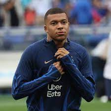
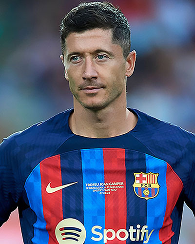
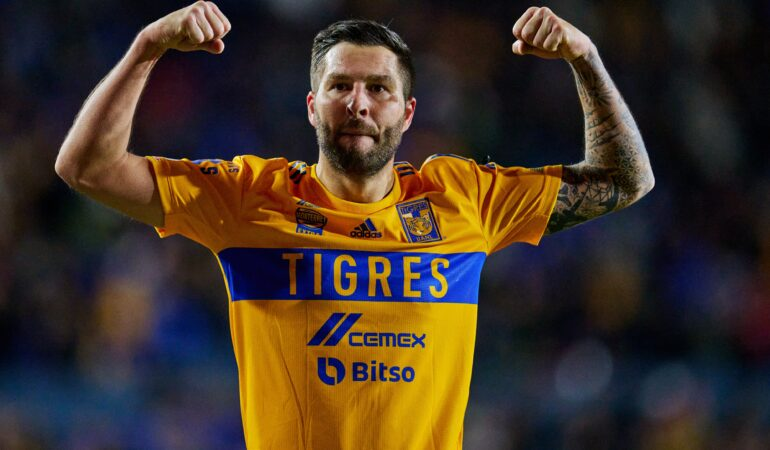

Nacido en el XIX distrito de París, en diciembre de 1998, transcurrió su infancia en Bondy, localidad ubicada en el cercano departamento de Sena-San Denis. Es hijo del inmigrante camerunés de origen nigeriano Wilfried Mbappé Lottin, actual entrenador y exjugador de fútbol, quien fue su representante, y de Fayza Lamari, de origen argelino, una exjugadora de balonmano.
La carrera profesional de Lewandowski comenzó en el 2005 con el filial del Legia Varsovia. En la temporada 2006-2007, Lewandowski fue el máximo artillero de la II Liga, donde anotó un total de 15 goles, ayudando al Znicz Pruszków a conseguir el ascenso a la I Liga. En la siguiente temporada fue el máximo anotador de la I Liga, logrando anotar un total de 21 goles, lo que le llevó a ser objeto de interés para uno de los clubes históricos de Polonia, el Lech Poznań.
Lionel Andrés Messi Cuccittini (Rosario, 24 de junio de 1987), conocido como Leo Messi, es un futbolista argentino que juega como delantero o centrocampista y su equipo actual es el Inter Miami de la MLS de Estados Unidos. Es internacional con la selección de Argentina, equipo del que también es capitán.

André-Pierre Gignac (Martigues, 5 de diciembre de 1985) es un futbolista francés naturalizado mexicano que juega como delantero en Tigres UANL de la Liga MX. Gignac hizo su debut con Francia en abril de 2009 contra Lituania. Convirtió su primer gol con su selección cinco meses después contra la Islas Feroe. Gignac participó en la Copa Mundial FIFA 2010, jugando los tres partidos que disputó su selección. También participó en la Eurocopa 2016, donde fue subcampeón.
